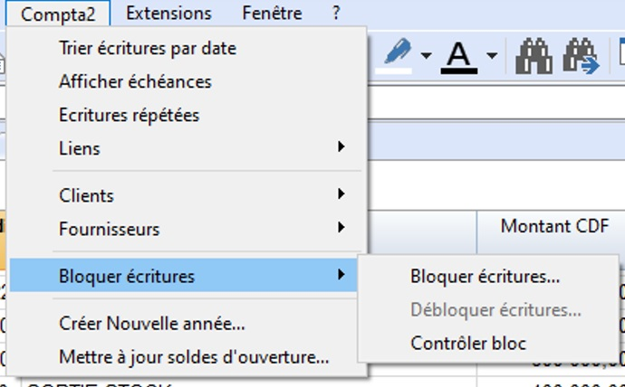
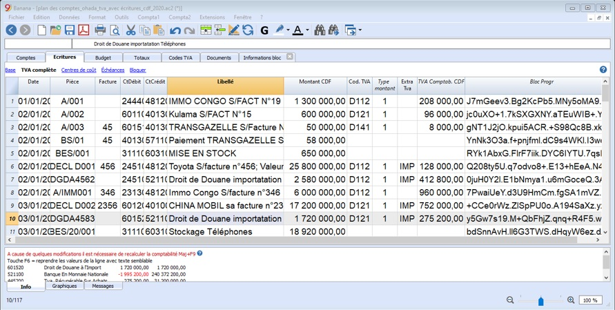
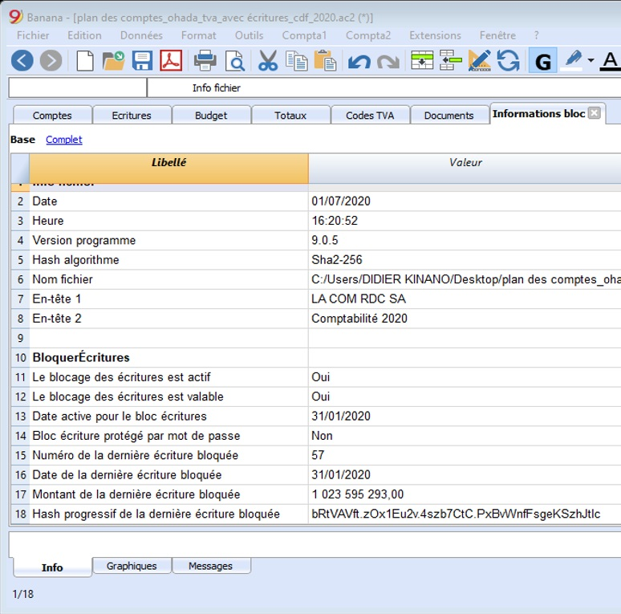
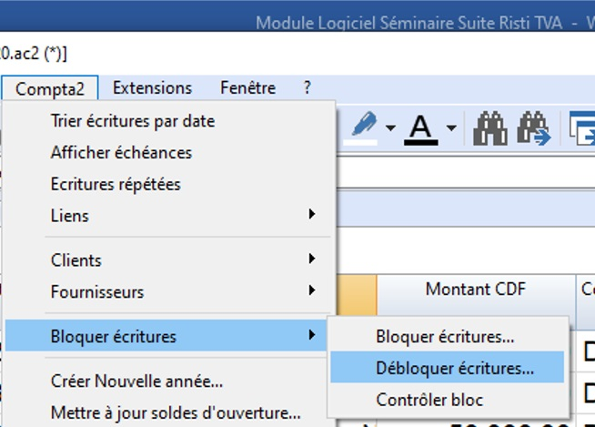
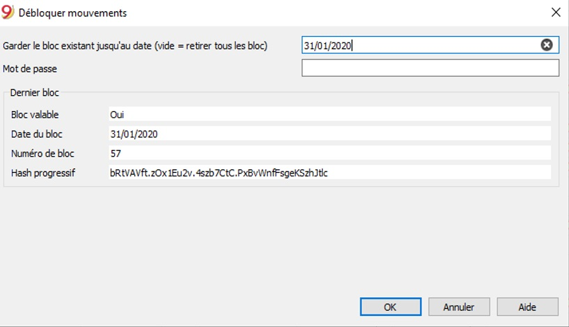

Activité 9: Protection des écritures et des données comptables (Bloquer écritures et certification)
Contenu:
A. Fiche Pédagogique
1. Objectifs spécifiques :
Au terme de cette activité, les participants seront capables de :
-
Bloquer les mouvements de la comptabilité ;
-
Vérifier le bloc écriture
-
Débloquer les écritures.
2. Supports :
-
OHADA, Acte uniforme relatif au droit comptable et à l’information financière et système comptable OHADA, Yaoundé le 15 février 2017 ;
-
Guide d’application OHADA ;
-
EPSP, DIPROMAD, Curriculum des Humanités Techniques Commerciales, Commerciale et Gestion, Kinshasa 2014 ;
-
SERNAFOR Technique, module de formation sur le système comptable OHADA niveau 4, 2018 ;
3. Méthodes et techniques :
Exposé, discussion dirigée, brainstorming et travail de groupe.
4. Durée :
120 minutes
5. Déroulement de l’activité :
| N° | Tâches | Méthodes et Techniques | Durée |
|---|---|---|---|
| 1 | Présenter l’activité et ses objectifs | Exposé | 5 min. |
| 2 | Expliquer :
|
Brainstorming | 30 min. |
| 3 | Constituer des sous-groupes pour Bloquer, contrôler et débloquer les écritures partant d’une application | Travail en groupe | 55 min. |
| 4 | En plénière : le rapporteur de chaque sous-groupe présente la production de son équipe suivie de mise en commun avec les membres des autres sous-groupes et du facilitateur. | Discussion dirigée | 20 min. |
| 5 | Questions de synthèse
|
Discussion dirigée | 10 min. |
B. Fiche Technique
1. Certification Digitale
Banana utilise un système de certification digitale des données comptables basé sur une technique que l’on appelle aujourd’hui blockchain (chaines de blocs). Les écritures peuvent être bloquées et munies d’un système de marquage digital qui garantit l’authenticité des données comptables.
Banana.ch a été la première compagnie au monde à utiliser la technologie blockchain en comptabilité. La méthode a été brevetée en 2002 (US Patent No. 7,020,640).
Cette méthode garantit de hauts niveaux d’intégrité des données et de conformité aux normes de la loi. Consultez à ce sujet l’évaluation de la société de révision Ernst&Young qui a vérifié en 2002 la compatibilité du système par rapport aux normes en vigueur. Les nouvelles versions du logiciel utilisent la méthode de Hash SH256 e plus le MD5 cité dans les documents.
-
Ernst&Young vérifie la compatibilité avec les normes suisses (pdf en Allemand)
Consultez: Ordonnance concernant la tenue et la conservation des livres de comptes du 24 avril 2002 ; -
Ernst&Young vérifie la compatilibité avec les normes allemandes (pdf en Allemand).
La méthode de certification basée sur l'enchaînement des blocs de données "blockchain", est considéré tellement fiable qu'elle est utilisée pour assurer la validité des bitcoins et de toutes les crypto-monnaies modernes.
2. Commande Bloquer Écritures
Avec la commande Bloquer écritures (voir image ci-dessus, les mouvements de la comptabilité sont bloqués et marqués par des chiffres de contrôle qui servent à vérifier dans le temps si les écritures n’ont pas été modifiées.

-
La validité d’un éventuel bloc déjà existant est vérifiée
-
Les écritures, jusqu’au date du bloc, sont progressivement numérotées et bloquées. Pour chaque écriture, la marque digitale de la ligne et celle progressive est calculée. Le calcul des marquages digitaux est effectué selon la séquence des colonnes.
-
Dans la comptabilité, il sera indiqué que les écritures, avec une date égale ou inférieure à celle du bloc, ne seront plus acceptées.
-
Date nouveau bloc (inclus): Spécifiez jusqu’à quelle date les mouvements doivent être bloqués.
-
Mot de passe (facultatif): Il est possible d’insérer un mot de passe pour permettre l’éventuel déblocage des écritures ou pour faire par la suite un nouveau bloc. Si le programme ne trouve pas d’erreurs dans les écritures comprises dans la date du bloc, il bloque les écritures, calcule et attribue à chaque ligne d’écritures différents chiffres et codes pour chaque ligne, affichés dans la vue Bloquer.
-
Dernier bloc: Les valeurs de cette section sont automatiquement insérées par le programme, selon le dernier bloc effectué.
-
Bloc valable: Le mot “Oui” est affiché si le bloc est valable.
-
Date du bloc: La date du dernier bloc effectué.
-
Numéro du bloc: La valeur insérée automatiquement par le programme, dans la dernière ligne de la colonne “BlocNum”. Quand le bloc est répété, si la valeur de la ligne du dernier bloc reste inchangée, cela veut dire que le bloc est valable et par conséquent, les données n’ont pas été modifiées. Si, au contraire, la valeur est différente de la première, le programme indique :
-
(-1) si déjà à partir de la première ligne le bloc n’est pas valide
-
(-2) s’il y a des lignes qui ont le même “BlocNum”
-
3. Hash Progressif
Le chiffre de contrôle qui se trouve sur la dernière écriture.
Écritures : vue Bloquer

Les marques digitales sont affichées ainsi que les informations qui ont servi pour attribuer la signature digitale.
-
Bloc Num: le numéro progressif qui indique la ligne.
-
Bloc Mon : le montant cumulatif des mouvements, semblable au total de fin de page, demandé par certaines législations.
-
Bloc Ligne : (colonne masquée) la marque digitale calculée selon les valeurs de la ligne.
-
Bloc Progr: la marque digitale globale.
La marque digital Bloc Progr
L’élément central de la certification qui utilise la méthodologie de la blockchain. La marque digitale est calculée selon les valeurs suivantes :
-
Du contenu de l’écriture actuelle, y compris les montants, les libellés et la description du compte au moment du bloc.
-
Du numéro progressif (BlocNum)
-
Du solde cumulé (BlocImp)
-
De la marque progressive de l’écriture précédente (Bloc Progr)
Si les données de la comptabilité devraient subir une modification minimale (une date a été changée, un montant) le chiffre de contrôle aura un résultat différent. Si le chiffre de contrôle reste inchangé, cela veut dire que les données sont originales et n’ont donc pas été changées.
4. Contrôler Bloc
Avec la commande Contrôler bloc, le programme contrôle si le bloc est valide et affiche les données du bloc.
-
Le programme recalcule les marques digitales et vérifie si ceux qui sont recalculés sont égaux à ceux associés aux écritures. Si les valeurs correspondent, le bloc est considéré valable et les données sont donc les originales ;
-
Si les marques ne sont pas égales, cela veut dire que les données ont été modifiées et que celles-ci ne sont pas les données originales calculées au moment du bloc.

5. Débloquer Écritures
La commande Débloquer écritures enlève le bloc et les chiffres de contrôle.

Si le bloc a été doté d’un mot de passe, il faut le réinsérer pour procéder au déblocage. Si l’on souhaite ensuite procéder à un nouveau bloc, les chiffres de contrôle seront les mêmes que le blocage précédent si les données et l’ordre des écritures n’ont pas été changées. Si, au contraire, elles ont été changées, les chiffres de contrôle changent.
6. Déblocage Partiel
Quand les écritures ont été bloquées, on peut également les débloquer, même partiellement, à partir d’une certaine date. Si dans le bloc un mot de passe a été inséré, il faut insérer le mot de passe dans la case appropriée pour confirmer le déblocage.

7. Pourquoi débloquer la comptabilité ?
En principe une comptabilité bloquée ne devrait pas être débloquée. Cela arrive quand après le bloc on se rend compte qu’il y a des erreurs dans la comptabilité et qu’il est nécessaire de faire des corrections.
Auparavant, afin de pouvoir effectuer des corrections ultérieures, les utilisateurs devaient tenir une copie du fichier faite avant le bloc. Si des erreurs étaient trouvés, la situation précédente était reprise. Souvent, entretemps, d’autres écritures étaient ajoutées et donc, très souvent, en reprenant les versions précédentes, le résultat de la comptabilité était erroné. Pour éviter ce genre de temps perdu, nous avons décidé de mettre à disposition la commande Débloquer écritures.
La certification des données ne doit pas être confondue avec la sécurité des données. La certification des données est une méthode qui garantit que les données de la comptabilité sont celles originales. Pour empêcher que celles-ci soient modifiées, la méthodologie est celle relative à la sécurité des données. Des procédures pour la sécurité des données peuvent, toutefois, être mises en œuvre seulement dans un contexte qui limite l’accès aux données.
Si le fichier est complètement à disposition de l’utilisateur, comme, par exemple, quand il se trouve sur un PC, les personnes ont le contrôle complet des données. Ils peuvent donc facilement remplacer le fichier. Avec la certification, on n’empêche pas que les données soient altérées, mais cela nous permet, au moins, de savoir si ce sont les données originales.
La personne qui tient la comptabilité est responsable de la comptabilité et doit décider si une modification est légitime ou non.
8. Organiser la Certification et la Vérification
Une fois que les mouvements de la période ont été bloqués, il faut :
-
Imprimer les informations du bloc ou la dernière ligne certifiée avec le numéro relatif de certification (Bloc Progr) ;
-
Signer et conserver cette information avec les documents de la comptabilité ou dans un autre lieu sûr.
Afin de vérifier que les données comptables sont celles originales :
-
Exécutez la commande Afficher informations bloc.
-
Reprenez le document où se trouve la marque digitale de vérification.
-
Contrôlez si la ligne identifiée avec le Bloc Num a toujours la même marque digitale :
-
Si le numéro correspond, les données de la comptabilité sont les mêmes que celles certifiées ;
-
Si le numéro ne correspond pas, cela implique que les données de la comptabilité ont été modifiées.
La certification digitale garantit que les données sont encore toujours les originales. Mais elle n’empêche pas la modification des données. C’est la responsabilité du comptable de garantir que les données ne sont pas altérées. Chaque administration doit avoir une organisation adéquate à sa dimension et à ses nécessités. Pour ceux qui désirent s’assurer que les données ne soient pas altérées par des personnes non autorisées, il faut utiliser d’autres méthodes et outils, comme, par exemple :
-
Enregistrer les données sur un système sûr (disque de réseau protégé), protégé d’un mot de passe ;
-
Conserver des copies des données ;
-
Cryptage des archives.
9. Archivage à Long Terme
Les fichiers de la comptabilité contiennent les données qui ont été insérées. Pour ouvrir le fichier et obtenir un rapport ou une fiche de compte, il faut donc toujours avoir le programme à votre disposition.
Banana Comptabilité permet d’exporter toutes les données de la comptabilité en format Pdf, Html et Xml. L’archive générée peut être sauvegardée sur un CD et consultée sur chaque ordinateur à distance, pendant des années, aussi par des personnes qui n’ont pas Banana Comptabilité.
Last modified: 2020-10-07 16:58:55 +0200 CEST